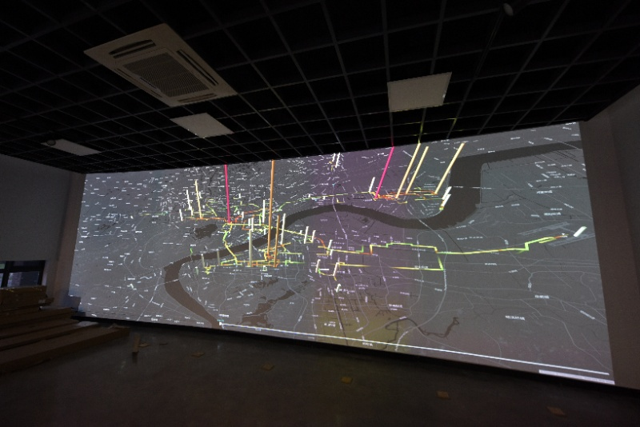

Keqin Qian / 钱克勤
 |
Keqin Qian is a Researcher at Machine Learning Data Mining , Zhejiang University. He is now the director of Computational Social Science Research Center (ZJUCCS, accessiable with ZJU VPN). He is also a Honorary Research Fellow of Data Science Institute and Department of Computing, Imperial College London, and the Director of Big Data Research Center - ZJPTCC.
His main research interests is about distributed machine learning, privacy protection, and computable social analytics. A list of selected publications is available here.
He is also the creator of Mo, which is web-based platform for both AI modelling and eduction.
|
[
Research team |
Blog |
Reading list ]
[Recent Talks |
Personal page on ZJU |
Github page ]
Research
- Distributed AI (Galaxy Learning): A decentralized machine learning methodology based on Federated Learning. The research focuses on joint modelling for non-IID data, privacy protection, and data pricing. We are also developing an open source framework for it.
- Computable Social Analytics: Data driven methodology for social science research, including intelligent transportation, smart cites, and neuro-management, etc. We established ZJUCCS as a hub for this research.
Recent publications:
List of publications can be found here.
Teaching
Courses in ZJU:
- 建设中...
- Introduction to AI
- Machine learning algorithms and platforms (for School of Software Engineering)
We organize the summer school of "Data Driven Social Science Research" each year. Please find more details here.
Projects
- Mo: Mo is a web-based platform for both AI modelling and eduction. In addition to the public version. It also has a ZJU version and a K-12 version.
- Distributed AI Platform: This work has been funded by National Natural Science Foundation of China.
- Intelligent Transportation: Some example here.

top
Contact Information
If you are
interested in studying for a MCS, please contact me:
| School of Engineer |
|
| Chengyuan Campus |
Email qiankq@zju.edu.cn |
| Hangzhou, 310058 CN |
Tel: +86 571 56330000 |
[ Social Analytics Platform |
Imperial College London |
MO ]
|
![[Zhejiang Univ]](http://img0.imgtn.bdimg.com/it/u=967302125,2315144515&fm=26&gp=0.jpg)